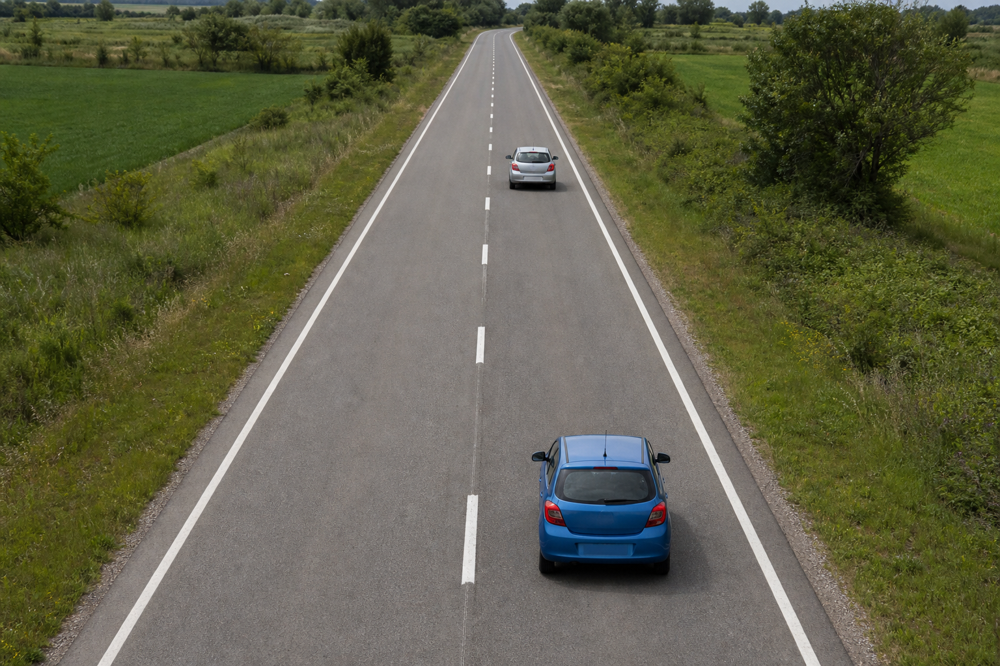
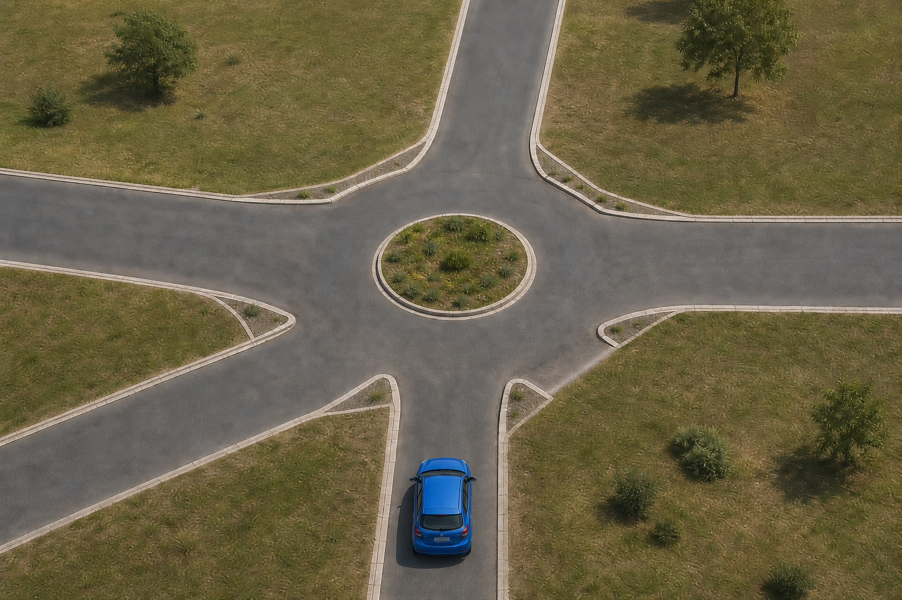
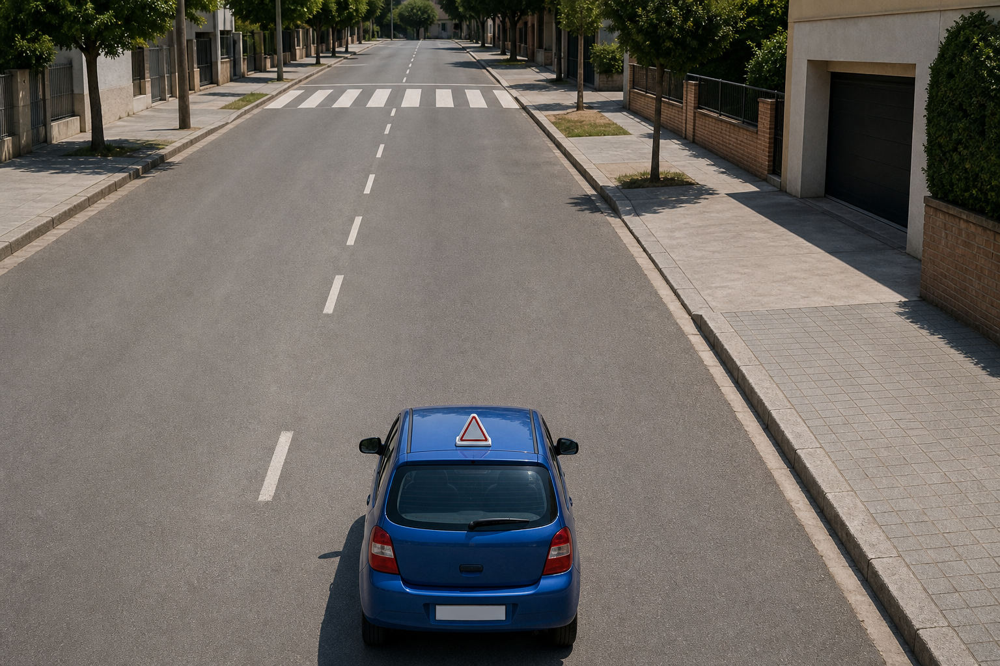

Examen Práctico
Photo-like driving surfaces
Superficies de conducción de aspecto fotográfico
Review mockup — not active in the game
Maqueta para revisión — no activa en el juego



Examen Práctico
Superficies de conducción de aspecto fotográfico
Review mockup — not active in the game
Maqueta para revisión — no activa en el juego


